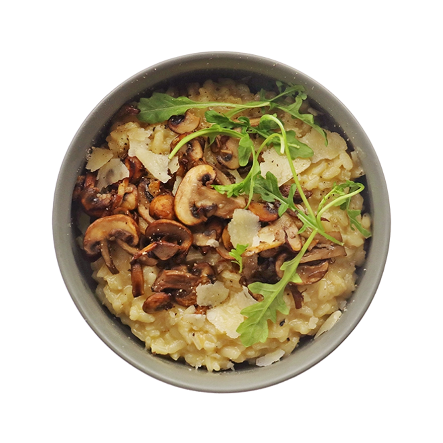

Simple Risotto
40min - 480 kcal/per person
- 50g Arborio rice
- small onion, finely chopped
- cloves garlic, minced
- 00ml vegetable broth (hot)
- 0g grated Parmesan cheese
- tbsp butter
- tbsp olive oil
- Salt & pepper to taste
- Heat olive oil and butter in a large pan over medium heat.
- Add chopped onion and cook until translucent, about 3 minutes.
- Stir in garlic and Arborio rice. Cook for 1–2 minutes until rice edges look slightly translucent.
- Add a ladle of hot vegetable broth and stir until absorbed.
- Continue adding broth, one ladle at a time, stirring constantly until absorbed before adding the next.
- Repeat for about 18–20 minutes, until rice is creamy and tender with a slight bite.
- Turn off the heat and stir in grated Parmesan cheese. Season with salt and pepper to taste.
- Let rest for 1 minute, then serve warm with optional garnish (extra cheese or herbs).
- Enjoy!